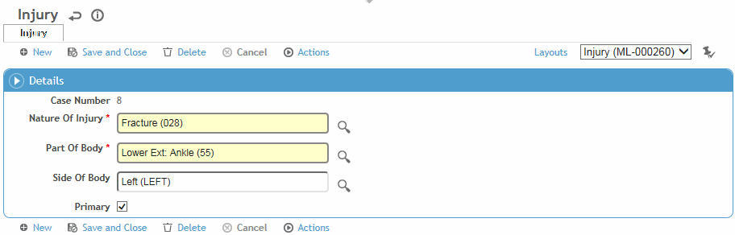

For each injury relating to a visit, you must identify the nature of the injury, the part of the body, and the side of the body.
On the Nature of Injury tab of the Clinic Visit record, click New.
Select the appropriate Nature of Injury, Part of Body, and Side of Body.
If this is the first record, it will be deemed the Primary nature of injury. If there are multiple entries, indicate which one should be considered Primary.
Click Save.
